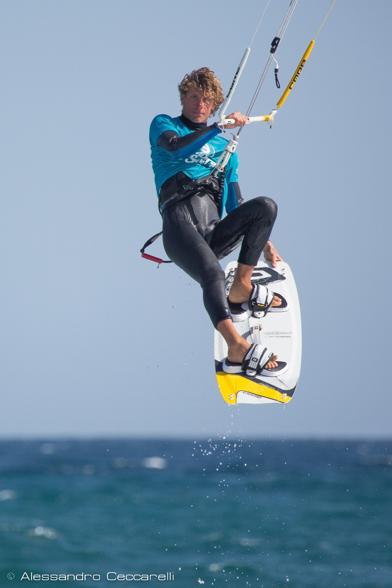

O MNIE

Żeglarz, kitesurfer, pasjonat sportów wodnych i zimowych. Najczęściej spotkasz mnie tam, gdzie świeci słońce i wieje wiatr, lub gdzie właśnie napadało dużo śniegu. Od najmłodszych lat związany z wodą. Podobno pierwszy mazurski rejs zaliczyłem w wieku jedenastu miesięcy. Zbyt dobrze tego nie pamiętam ale musiało być fajnie skoro cały czas żegluję. Później była deska z żaglem, deska na śniegu, aż w końcu odkryłem deskę z latawcem, na której ostatnio spędzam najwięcej czasu. Podróżuję po świecie, prowadzę szkolenia kitesurfingowe, szkolenia snowboardowe i organizuję rejsy żeglarskie.
- Absolwent Gdańskiej Akademii Wychowania Fizycznego i Sportu: trener żeglarstwa oraz zarządzanie w sporcie
- Instruktor kitesurfingu level 3 (IKO)
- Instruktor snowboardu (SITS)
- Jachtowy sternik morski (PZŻ)
- Instruktor windsurfingu (MENiS)
- Morski sternik motorowodny (PZMiNW)
Jako instruktor, swoją pierwszą pracę podjąłem w 2007 roku w Rewie koło Gdyni, ucząc windsurfingu. W tym samym czasie rozszerzyłem zakres umiejętności o kitesurfing. W 2012 roku zrobiłem kurs instruktorski i zacząłem prowadzić szkolenia kitesurfingowe. Jednocześnie cały czas bliskie mi było żeglowanie. W ciągu kilku lat wziąłem udział rejsach na Bałtyku oraz Morzu Północnym, które umocniły moją żeglarską pasję. Obyłem się z morzem i zebrałem cenne doświadczenie, które w 2012 roku pozwoliło mi uzyskać patent Jachtowego Sternika Morskiego. Rok później zorganizowałem swój pierwszy samodzielny rejs na morzu.
Zimą nigdy nie zamieniam się w Śpiącą Królewnę i cały czas jestem aktywny. Kiedy zamarzają pobliskie akweny lub spada pierwszy śnieg, od razu ruszam na snowkite’a. Moja pasja sięga również górskich stoków, na których od 2010 roku prowadzę szkolenia snowboardowe.


AKTYWNOŚCI
Rejsy żeglarskie
 Posiadam uprawnienia Jachtowego Sternika Morskiego, które pozwalają mi na żeglugę po wszystkich wodach świata na jachtach o maksymalnej długości 18 m. Do tej pory organizowałem rejsy na Bałtyku, w Chorwacji, Grecji, na Wyspach Kanaryjskich, Bahamach i Karaibach. Za rufą zostawiłem ponad 5 000 mil morskich.
Posiadam uprawnienia Jachtowego Sternika Morskiego, które pozwalają mi na żeglugę po wszystkich wodach świata na jachtach o maksymalnej długości 18 m. Do tej pory organizowałem rejsy na Bałtyku, w Chorwacji, Grecji, na Wyspach Kanaryjskich, Bahamach i Karaibach. Za rufą zostawiłem ponad 5 000 mil morskich.
Kite
 Jestem instruktorem 3ciego stopnia międzynarodowej organizacji IKO (International Kiteboarding Organization). Do tej pory szkoliłem w Polsce, Brazylii, Tajlandii, Grecji, Meksyku, na Wyspach Kanaryjskich i Curacao. Każde z tych miejsc wymaga innego stylu uczenia. Od płaskiej wody, przez fale, po zajęcia z motorówki, daleko od lądu. W tym czasie wyszkoliłem około ponad 800 osób w trakcie 4 500 godzin lekcji.
Wyjazd indywidualny
 Organizuję rejsy po morzu i śródlądziu, obozy oraz półkolonie. Prowadzę szkolenia sportowe na wodzie i śniegu. Specjalizuję się głównie w szkoleniach kitesurfingowych oraz rejsach żeglarskich. Szczególnie przypadły mi do gustu ciepłe rejony: Morze Śródziemne, Wyspy Kanaryjskie, Brazylia, Tajlandia, Bahamy, Karaiby. Jeżeli interesuje Cię coś więcej niż hotelowy basen i opcja all inclusive to skontaktuj się ze mną. Przygotuję dla Ciebie wyjazd dostosowany do Twoich wymagań!
Organizuję rejsy po morzu i śródlądziu, obozy oraz półkolonie. Prowadzę szkolenia sportowe na wodzie i śniegu. Specjalizuję się głównie w szkoleniach kitesurfingowych oraz rejsach żeglarskich. Szczególnie przypadły mi do gustu ciepłe rejony: Morze Śródziemne, Wyspy Kanaryjskie, Brazylia, Tajlandia, Bahamy, Karaiby. Jeżeli interesuje Cię coś więcej niż hotelowy basen i opcja all inclusive to skontaktuj się ze mną. Przygotuję dla Ciebie wyjazd dostosowany do Twoich wymagań!